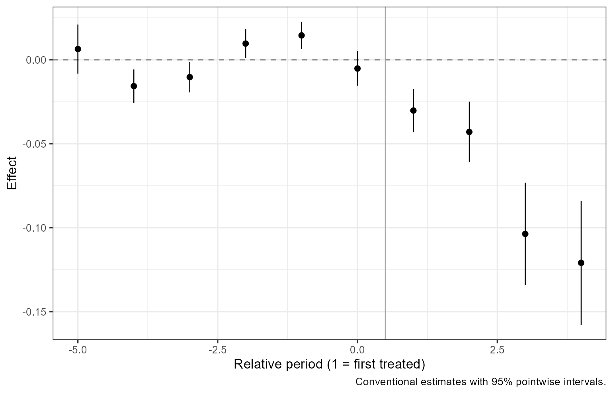
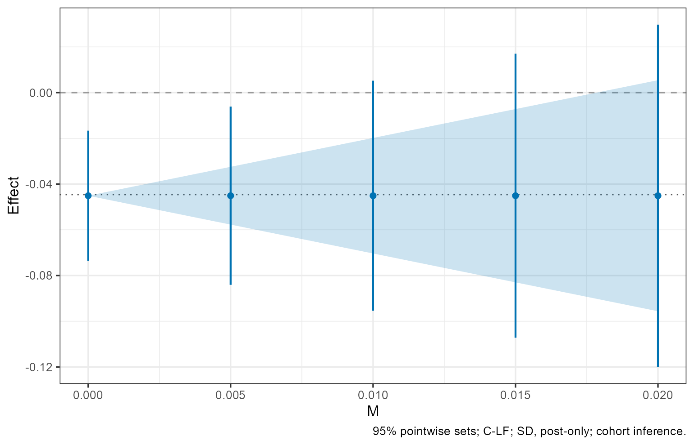
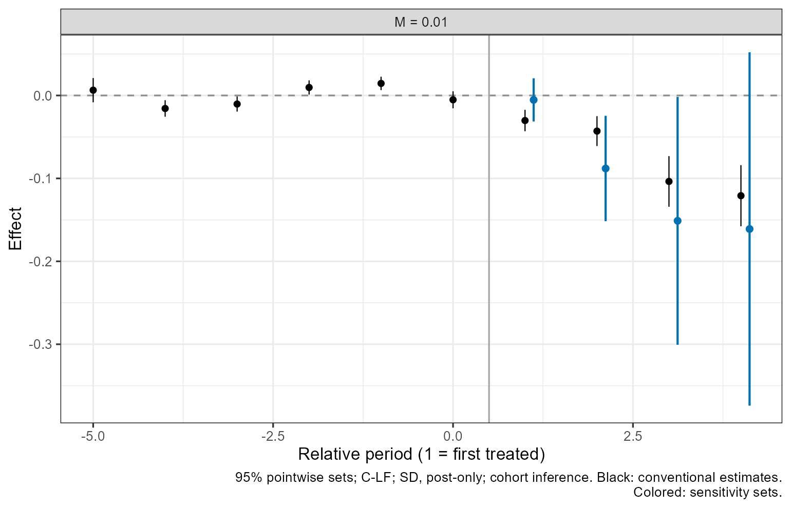
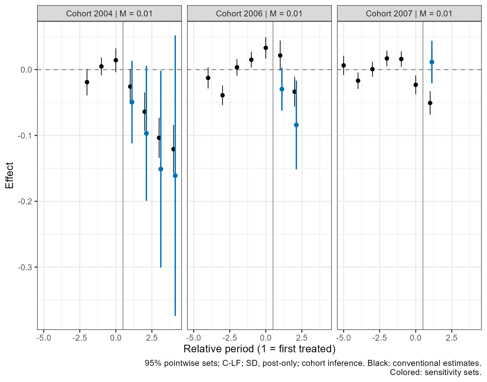
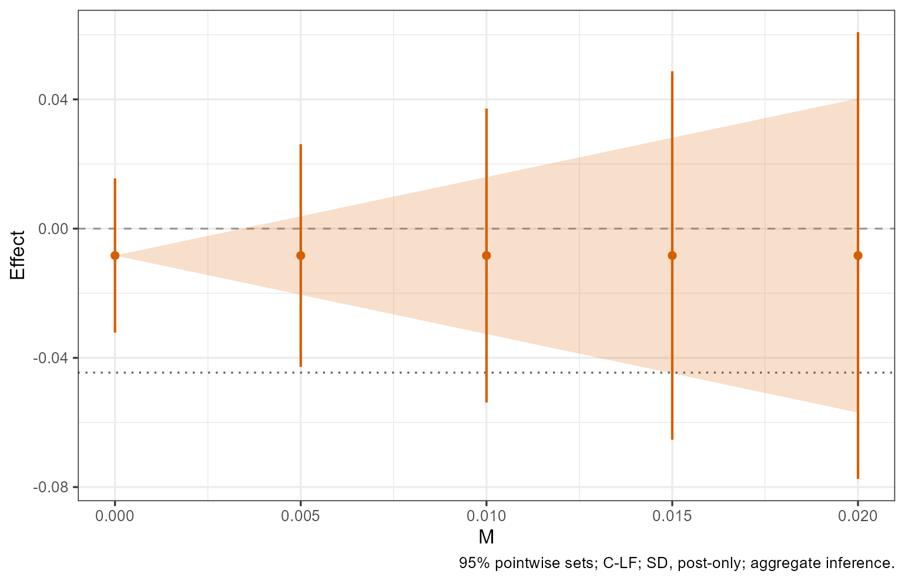

Getting started with CohortHonestDiD
Ziyi Liu
Source:vignettes/getting-started.Rmd
getting-started.RmdCohortHonestDiD applies the sensitivity analysis of Rambachan and Roth (2023) to staggered adoption, cohort by cohort. It estimates cohort-period effects and places the sensitivity restriction on each adoption cohort’s block bias: the cohort’s untreated trend relative to its comparison group at adoption. You choose the estimator, the restriction and its bounds, the target (an average, dynamic, or cohort-specific effect), and the inference procedure. The package reports a confidence set for the target at each bound. This tutorial uses the minimum-wage application of the paper.
1. Data and estimation
The panel contains 2,284 counties observed from 2001 through 2007,
the sample of the Callaway and Sant’Anna (2021) application used in the
paper. Y is log teen employment. D equals one
from the first year in which the state’s minimum wage exceeds the
federal minimum of $5.15 and stays one afterwards.
data(minimum_wage)
head(minimum_wage[c("id", "year", "Y", "D")])
#> id year Y D
#> 1 8001 2001 8.730690 0
#> 2 8001 2002 8.541300 0
#> 3 8001 2003 8.461469 0
#> 4 8001 2004 8.336870 0
#> 5 8001 2005 8.340217 0
#> 6 8001 2006 8.378161 0cohort_fit() takes the outcome and treatment as a
formula and the unit and time columns in index, following
the FEct input
style. It accepts one outcome and one treatment, without
covariates.
fit <- cohort_fit(Y ~ D, data = minimum_wage,
index = c("id", "year"), estimator = "imp")
fit
#> Cohort difference-in-differences fit
#> Estimator: imp
#> Covariance: CR1 cluster-robust, 2284 clusters
#> Cohorts: 3 | Coefficients: 21
#> cohort units clusters mass
#> 0 1377 1377 1377
#> 4 100 100 100
#> 6 223 223 223
#> 7 584 584 584
plot(fit)
estimator = "imp" is the imputation estimator;
"cs_nyt" and "cs_nt" are the
Callaway-Sant’Anna estimators with not-yet-treated and never-treated
controls. On a balanced panel, imp and cs_nyt
give the same cohort confidence sets, the paper’s equivalence result.
cs_nt and aggregate inference need not give the same sets,
and the equivalence is not established for unbalanced panels. The
default cluster-robust covariance (CR1) clusters by unit, and
cluster = "state" clusters by state; Section 6 shows the
bias-reduced CR2 option. weights = "weight_column" supplies
positive weights fixed within unit. Y = "Y" and
D = "D" can replace the formula.
Relative period 1 is the adoption period, and period 0 is the last
untreated period. For imputation, the plotted pre-treatment coefficients
are cohort-weighted averages of the block-bias estimates under the
paper’s normalization (plot(fit, type = "cohort-dynamic")
shows each cohort); they are not residual pre-trends.
2. Average effects under SD
The second-differences restriction (SD) bounds the change in the
slope of each cohort’s block-bias path between consecutive periods by
M, in outcome units. With Y in logs,
M = .01 allows that slope to change by up to 0.01 (in log
units) from one period to the next. The paper recommends the Conditional
or C-LF procedure under the post-only restriction, and the default is
the conditional least-favorable hybrid (C-LF) with
full.path = FALSE, which bounds only the slope changes that
involve post-treatment periods.
att <- cohort_sensitivity(fit, restriction = "SD", M = c(0, .005, .01, .015, .02),
target = "att", seed = 123)
att
#> cohort inference | SD | C-LF | post-only
#> Target: att | 95.0% pointwise confidence sets
#> Covariance: CR1 cluster-robust, 2284 clusters
#> target M component lower upper status
#> att 0.000 1 -0.07354773 -0.016636643 ok
#> att 0.005 1 -0.08407118 -0.006113197 ok
#> att 0.010 1 -0.09539677 0.005212393 ok
#> att 0.015 1 -0.10720065 0.017016276 ok
#> att 0.020 1 -0.11991955 0.029735177 ok
plot(att)
The ATT target averages treated unit-periods, so larger cohorts and cohorts with more treated periods receive more weight. The shaded band is the plug-in identified set, computed as if the estimated coefficients were the true ones. Under the post-only restriction it is never empty, because the pre-treatment path is not restricted. The colored intervals are the confidence sets. Each marker is the center of the plug-in identified set; under post-only C-LF it is also the center of the confidence set.
The conditional procedure (Conditional) and the fixed-length confidence interval (FLCI) are also available:
conditional <- cohort_sensitivity(fit, M = .01, method = "Conditional", seed = 123)
flci <- cohort_sensitivity(fit, M = .01, method = "FLCI") # full path by defaultfull.path = TRUE requests the full-path restriction for
any of the three procedures. For the FLCI, the plotted marker is its
optimized center. In this application, the fitted pre-treatment paths
violate the full-path restriction at every bound shown above, so
full-path sets can be empty or lie away from the estimate. Under the
full-path restriction, the FLCI also uses the pre-treatment slope
changes and is never longer than the post-only FLCI, but its coverage
guarantee no longer holds when those changes exceed M, and
its coverage deteriorates when some cohorts contain only a few units.
Use it with caution. plot(flci, type = "weights") shows the
weights it puts on the pre-treatment coefficients; the detailed guide
compares them with those of the post-only FLCI.
3. Dynamic and cohort-dynamic effects
dynamic averages the cohorts observed at each
post-treatment relative period, so the cohort mix can change across
periods. cohort-dynamic reports each cohort-period effect
separately. The default plot overlays the sensitivity intervals on the
conventional event-study coefficients.
dynamic <- cohort_sensitivity(fit, M = .01, target = "dynamic", seed = 123)
plot(dynamic)
cohort_dynamic <- cohort_sensitivity(fit, M = .01,
target = "cohort-dynamic", seed = 123)
plot(cohort_dynamic)
When several bounds were computed, plot(result, M = .01)
selects one and a vector of bounds compares facets. The intervals are
pointwise, not a simultaneous band. Plot functions return editable
ggplot objects.
4. Aggregate benchmark
With framework = "aggregate", the restriction applies to
the aggregated event-study coefficients, as in a HonestDiD analysis of
an aggregated event study, while the target stays the same. The same
M therefore generally imposes a different assumption than
under the default cohort framework.
aggregate <- cohort_sensitivity(fit, M = c(0, .005, .01, .015, .02),
target = "att", framework = "aggregate", seed = 123)
plot(aggregate)
Aggregate inference supports the ATT and dynamic targets. Cohort-dynamic targets require the cohort framework.
With balanced = TRUE, the target uses only the
post-treatment periods observed for every cohort, and aggregate
inference forms the aggregated event study only on the relative periods
observed for every cohort, for example
cohort_sensitivity(fit, M = .01, framework = "aggregate", balanced = TRUE, seed = 123).
Here the window runs from relative period -2 to 1, because the 2007
cohort is treated for one year, so the balanced target is the effect in
the first treated year. Balanced aggregation changes the estimand and
does not remove the change in the not-yet-treated comparison groups, so
aggregate and cohort inference can still differ. The detailed guide has
an example.
5. Relative magnitudes and parallel computing
The relative-magnitudes restriction (RM) bounds each post-treatment
change in a cohort’s block bias by M times that cohort’s
largest pre-treatment change, so its bound has no units. The paper
recommends choosing between RM and SD based on the empirical context.
The default procedure is again C-LF, and
method = "Conditional" is also available.
The following code is not run when this tutorial builds: in this application, each positive bound requires 320 separate cases, one for each combination of where and with which sign each cohort’s largest pre-treatment change occurs, and each is calibrated separately.
rm <- cohort_sensitivity(fit, restriction = "RM", M = c(0, .5, 1),
target = "att", parallel = TRUE, cores = 2, seed = 123)
plot(rm)parallel = TRUE runs independent target and bound tasks,
or the cases of a single RM task, on cores workers (by
default the detected cores minus one). A fixed seed gives
the same results for any number of workers. The examples use at most two
cores. RM confidence sets can consist of several pieces or be unbounded;
result$intervals stores every piece.
6. Your own data and diagnostics
Supply a long data frame with unit and time identifiers, a numeric
outcome, and a binary treatment indicator that stays at one after
adoption. The data need treated and never-treated units. Successive time
labels are treated as equally spaced; the package warns about irregular
numeric or date labels and uses character labels in sorted order. Under
cohort inference, every treated cohort in the fit needs at least two
pre-treatment periods, even when the target uses other cohorts.
Otherwise cohort_fit() still estimates conventional
effects, but sensitivity analysis returns
insufficient_prehistory and no confidence set. Weights must
be positive, finite, and constant within unit.
Outcomes are never imputed. A missing treatment status is filled
forward within unit from the last observed status, with no backward
fill, so an adoption hidden in a missing stretch is dated at the first
observed treated period. Unbalanced panels are accepted: estimation uses
the observed histories, while the bias map W is built for a
balanced panel with fixed cohort sizes. The package warns that this is
an approximation, because the paper’s coverage and equivalence results
are established for balanced panels.
fit$diagnostics$cohort_counts
#> cohort units clusters mass
#> 1 0 1377 1377 1377
#> 2 4 100 100 100
#> 3 6 223 223 223
#> 4 7 584 584 584
fit$diagnostics[c("covariance_rank", "normalized_dimension", "n_clusters")]
#> $covariance_rank
#> [1] 18
#>
#> $normalized_dimension
#> [1] 18
#>
#> $n_clusters
#> [1] 2284Check the number of independent clusters, particularly within each treated cohort. With few clusters, the estimated covariance can be unreliable even when the computation succeeds.
When some cohorts contain only a few units or clusters, the paper
recommends the bias-reduced CR2 covariance (Bell and McCaffrey 2002)
with the Conditional or C-LF procedure. CR2 drops CR1’s finite-sample
factor and divides each cluster’s score by sqrt(1 - p),
where p is the cluster’s share of the units of its cohort
(of the unit weights when weights is supplied);
never-treated units form their own group. If a cluster contains a whole
cohort, the part of its score from that cohort is zero, under CR2 and,
on a balanced panel, under CR1, so that cohort’s sampling variation is
omitted. ?cohort_fit describes the unbalanced case.
fit_cr2 <- cohort_fit(Y ~ D, data = minimum_wage,
index = c("id", "year"), estimator = "imp",
covariance = "CR2")
fit_cr2
#> Cohort difference-in-differences fit
#> Estimator: imp
#> Covariance: CR2 bias-reduced cluster-robust, 2284 clusters
#> Cohorts: 3 | Coefficients: 21
#> cohort units clusters mass
#> 0 1377 1377 1377
#> 4 100 100 100
#> 6 223 223 223
#> 7 584 584 584
head(fit_cr2$cluster_shares)
#> cluster cohort units mass share factor
#> 1 12001 6 1 1 0.004484305 1.00225
#> 2 12003 6 1 1 0.004484305 1.00225
#> 3 12005 6 1 1 0.004484305 1.00225
#> 4 12007 6 1 1 0.004484305 1.00225
#> 5 12009 6 1 1 0.004484305 1.00225
#> 6 12011 6 1 1 0.004484305 1.00225
att_cr2 <- cohort_sensitivity(fit_cr2, M = c(0, .01), seed = 123)
att_cr2
#> cohort inference | SD | C-LF | post-only
#> Target: att | 95.0% pointwise confidence sets
#> Covariance: CR2 bias-reduced cluster-robust, 2284 clusters
#> target M component lower upper status
#> att 0.00 1 -0.07362816 -0.016556215 ok
#> att 0.01 1 -0.09552996 0.005345581 okThe printed header of a fit or a sensitivity result names its
covariance. cluster_shares lists each cluster’s share of
its cohort and the factor applied to its score.
7. Numerical results and external estimates
Conditional and C-LF confidence sets come from a numerical grid
search. control sets its options and the C-LF calibration,
for example lf.sims, the number of calibration draws
(default 2000). For final results, increase the draws and check the
status column of result$intervals. If a
calculation is unsupported, for example a target with no sampling
variation, or a search cannot be resolved within its limits, the package
warns and reports success = FALSE, missing bounds, and a
status; this is not an empty confidence set. A finite grid can miss very
narrow pieces or gaps, and a Conditional search cannot rule out values
outside the range it searched, which summary(result)
reports. The detailed guide lists the controls, and
?cohort_sensitivity documents the search.
cohort_input() accepts externally estimated cohort
coefficients with their full joint covariance, the bias map
W, and the normalization constraints. The pre-treatment
coefficients must be block-bias estimates as defined in the paper; an
aggregated event study with marginal standard errors does not carry this
information. See ?cohort_input, ?build_W, and
the detailed guide.
This package accompanies Liu (2026), Cohort-Anchored
HonestDiD (arXiv:2509.01829); see
citation("CohortHonestDiD").